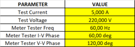
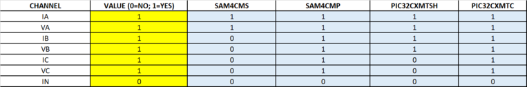
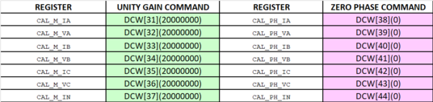
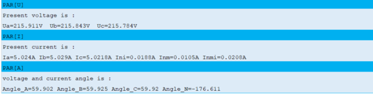
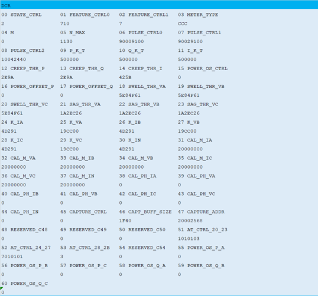
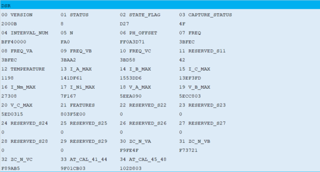
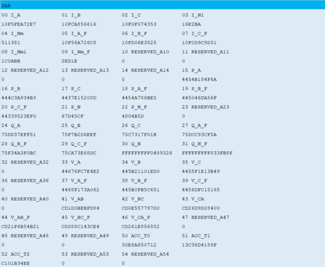
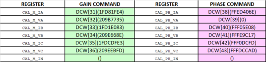

1.3.1.3.4.2 Manual Calibration
The calibration constants must be calculated according to the metrology library documentation. A spreadsheet is included in the distribution package to make the procedure easier. This spreadsheet calculates the proper values of the “CAL_x” registers and generates the commands to be sent to the board through the serial console to update the registers. This section explains how to calibrate the board using the spreadsheet. These are the steps to follow:
- Follow the instructions described in the previous chapter, ensuring that the board is properly configured, taking special attention with the configuration related to the hardware connected to the metrology inputs
- Open the
METROLOGY_CONFIGURE_CALIBRATE_CALCULATE.xlsx spreadsheet, go to the "Step by step
guide" sheet, and follow the steps. Note: The steps described here could change depending on the version of the Excel file.
- Configure the input sources and the meter tester if used (meter form, voltage, current, etc). In this example, a PIC32CXMTC board will be calibrated using a WECO tester, configured to generate 5A and 220V to each phase, at 60 Hz. Phase shift between voltage vectors is 120º, and phase shift between voltage and current vectors is 60º for each phase, but any convenient values of voltage, current and phase angle may be used.
- Write these values in the yellow
cells.
Figure 1-110. Input Sources Configuration  - If voltage-to-voltage phase
correction is desired, write “1” in the yellow cells. If enabled, the metrology
library will also correct the phase shift between the voltage vectors.
Figure 1-111. Voltage-to-Voltage Phase Correction - Select the channels to be calibrated.
Figure 1-112. Channel Selection  - Set the calibration constants to the
default values (unity gain and zero phase adjustments). To do that, copy the green
and purple cells to the metrology console. The constants can be sent as groups using
the "DCM" command:
Figure 1-113. Set Default Values as Groups Or it can be sent one by one. This is useful if not all channels are being configured and just certain channels need to be set to the default values:
Figure 1-114. Set Default Values Individually  - Energize the board, applying the established configuration (in the WECO software, this is done through the “JOG” command), and wait for the meter tester to stabilize the voltage and current sources.
- On PuTTy, enter the following
commands: “PAR[U]”, “PAR[I]”, “PAR[A]”, “DCR”, “DSR” and “DAR”. Then, copy and paste
the results to the blue cells:
Figure 1-115. Read the Measured Parameters from the Board (Commands PAR) Figure 1-116. Read DSP_CONTROL Registers (Command DCR) Figure 1-117. Read DSP_ST Register (Command DSR) Figure 1-118. Read DSP_ACC Register (Command DAR)  - The spreadsheet calculates the
calibration constants (”CAL_x” registers) and generates the commands to be
sent to the board through the serial console. The user can choose between:
- Sending the calibration
constants as groups using the”DCM” command; able to send multiple commands
at the same time. To do that, copy the green and purple cells to the
metrology console.
Figure 1-119. Set Calibration Constants as Groups - Sending the calibration
constants one by one by using the “DCW” command. To do that, copy the green
and purple cells to the metrology console.
Figure 1-120. Set Calibration Constants Individually 
- Sending the calibration
constants as groups using the”DCM” command; able to send multiple commands
at the same time. To do that, copy the green and purple cells to the
metrology console.
- Read the control registers (command
DCR) to check that the calibration registers were successfully updated (values in
bold):
DCR 00 STATE_CTRL 01 FEATURE_CTRL0 02 FEATURE_CTRL1 03 METER_TYPE 2 300 0 CCC 04 M 05 N_MAX 06 PULSE_CTRL0 07 PULSE_CTRL1 0 1130 81009100 81029100 08 PULSE_CTRL2 09 P_K_T 10 Q_K_T 11 I_K_T 11049100 60000 500000 500000 12 CREEP_THR_P 13 CREEP_THR_Q 14 CREEP_THR_I 15 POWER_OS_CTRL 2E9A 2E9A 212D 700000 16 POWER_OFFSET_P 17 POWER_OFFSET_Q 18 SWELL_THR_VA 19 SWELL_THR_VB 0 0 5E84F61 5E84F61 20 SWELL_THR_VC 21 SAG_THR_VA 22 SAG_THR_VB 23 SAG_THR_VC 5E84F61 1A2EC26 1A2EC26 1A2EC26 24 K_IA 25 K_VA 26 K_IB 27 K_VB 9A523 19CC00 9A523 19CC00 28 K_IC 29 K_VC 30 K_IN 31 CAL_M_IA 9A523 19CC00 9A523 1FD81FE4 32 CAL_M_VA 33 CAL_M_IB 34 CAL_M_VB 35 CAL_M_IC 209B7735 1FD1E083 209E668E 1FDCDFE3 36 CAL_M_VC 37 CAL_M_IN 38 CAL_PH_IA 39 CAL_PH_VA 209EEBFD 20000000 FFED406E 0 40 CAL_PH_IB 41 CAL_PH_VB 42 CAL_PH_IC 43 CAL_PH_VC FFF05E08 FFFE9C17 FFF0DCFD FFFDCCAD 44 CAL_PH_IN 45 CAPTURE_CTRL 46 CAPT_BUFF_SIZE 47 CAPTURE_ADDR 0 0 1F40 20000534 48 RESERVED_C48 49 RESERVED_C49 50 RESERVED_C50 51 AT_CTRL_20_23 0 0 0 1010103 52 AT_CTRL_24_27 53 AT_CTRL_28_2B 54 RESERVED_C54 55 POWER_OS_P_A 7000001 3 0 D96AAF3B 56 POWER_OS_P_B 57 POWER_OS_P_C 58 POWER_OS_Q_A 59 POWER_OS_Q_B 0 0 0 0 60 POWER_OS_Q_C 0 - Wait for about 2 seconds to let the DSP data to be stabilized.
- On PuTTy, enter “PAR” commands to read the measurements and check that the obtained values are accurate.
- Repeat steps 8 through 13 to recalibrate the meter again if the accuracy does not meet the specification requirement.
- When accuracy meets the requirement, save the calibration constants into non-volatile memory by using the terminal command “DCS”.
Note: The command “DCD” allows the default calibration and
configuration settings from the firmware (constant values stored in the application
code) to be loaded. Otherwise, the system will always be booting up with the calibration
values stored in non-volatile memory.